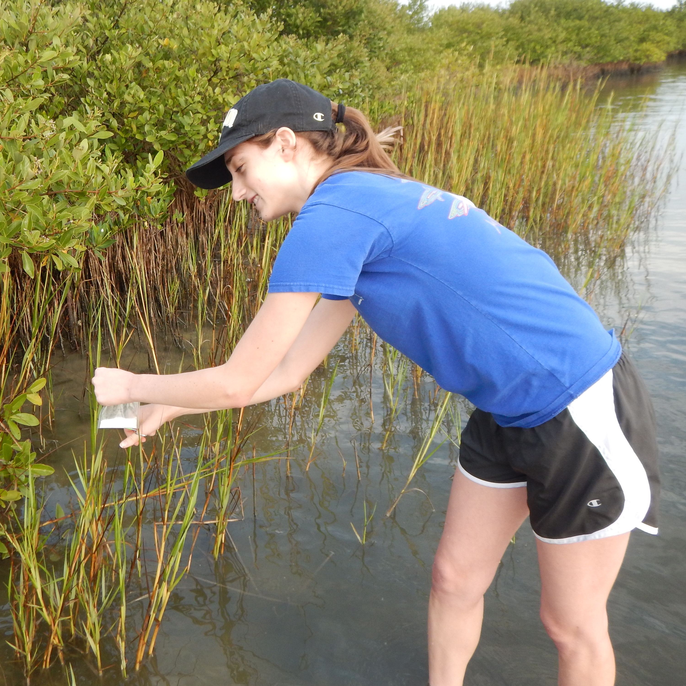
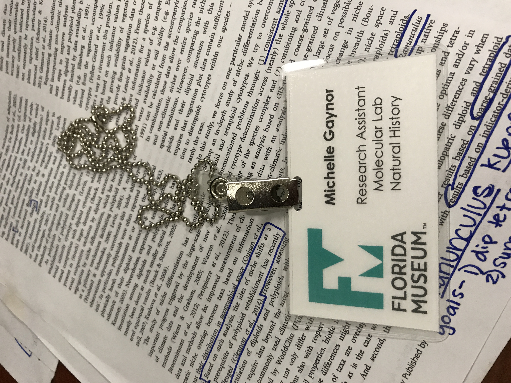
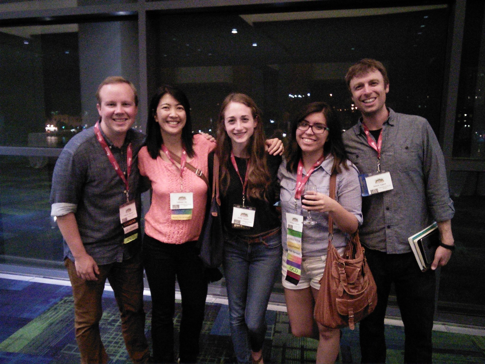

-
2018 - Present
University of Florida
Ph.D. in Botany
I am currently working with Drs. Pam and Doug Soltis for my graduate degree.
2014-2018
University of Central Florida
B.S. Biology
During my undergraduate, I worked with Drs. Eric Hoffman and Linda Walters on a project assessing genetic diversity within natural populations of smooth cordgrass to ensure effective restoration efforts.

2017
University of Missouri
NSF-REU
In Dr. J. Chris Pires lab, I worked with Hong An on unraveling the origins of allotetraploid Brassica napus.
2017
University of Florida
NSF-REU iDigBio
With Drs. Pam and Doug Soltis, I investigated niche divergence among ploidal levels in a classic autopolyploid system, Galax urceolata.
2016
University of Colorado-Boulder
NSF-REU
With Drs. Julienne Ng and Robert Laport, I investigated the influence of genome duplication on Brassicaceae and Rosaceae communities across the United States.
CV
Full curriculum vitae is available upon request.
News
{{ post.title }}
{{ post.subtitle }}